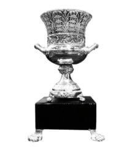

Palmares

Meilleur Club du 20 ème siècle
Trophée FIFA du Meilleur Club du XXe Siècle

League des Champions
14
1955-56 1956-57 1957-58 1958-59 1959-60 1965-66 1997-98
1999-00 2001-02 2013-14 2015-16 2016-17 2017-18 2021-22

Coupe du Monde des Clubs
7
1960 1998 2002 2014 2016 2017 2018

Supercoupe d’Europe
5
2002 2014 2016 2017 2022
Coupes UEFA
2
1984-85 1985-86

Ligues
35
1931-32 1932-33 1953-54 1954-55 1956-57 1957-58 1960-61
1961-62 1962-63 1963-64 1964-65 1966-67 1967-68 1968-69
1971-72 1974-75 1975-76 1977-78 1978-79 1979-80 1985-86
1986-87 1987-88 1988-89 1989-90 1994-95 1996-97 2000-01
2002-03 2006-07 2007-08 2011-12 2016-17 2019-20 2021-22

Coupes d'Espagne
19
1904-05 1905-06 1906-07 1907-08 1916-17 1933-34 1935-36
1945-46 1946-47 1961-62 1969-70 1973-74 1974-75 1979-80
1981-82 1988-89 1992-93 2010-11 2013-14

Supercoupes d'Espgane
12
1988 1989 1990 1993 1997 2001 2003 2008 2012 2017 2020 2022

Coupes Latine
2
1952 1956
.svg.png)
Coupe ligue region
18
1903-04 1904-05 1905-06 1906-07 1907-08 1912-13 1915-16
1916-17 1917-18 1919-20 1921-22 1922-23 1923-24 1925-26
1926-27 1928-29 1929-30 1930-31